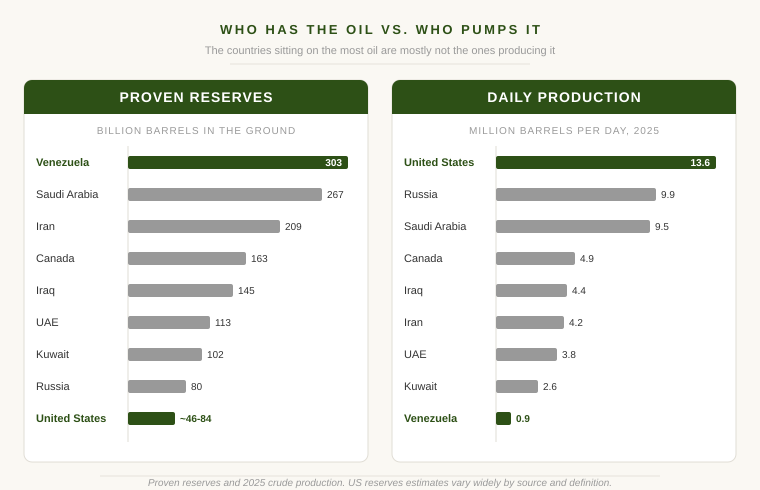
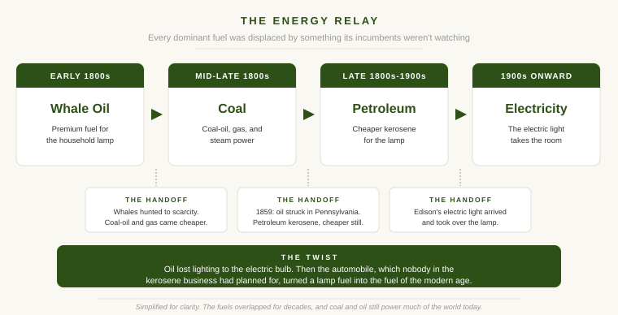

A few weeks ago I was flipping through a car magazine and landed on a piece about oil. The line that stopped me was that the United States is burning through its proven reserves faster than almost anyone. Then came a list of the countries sitting on the biggest reserves, and Venezuela was at the top. Iran was third. The United States was nowhere near the front, and Saudi Arabia wasn't in the runaway lead I'd half expected.
I read two Daniel Yergin books about ten years ago, The Prize and The Quest. The specifics have mostly faded. What stuck was the core idea, which is simple enough to survive a decade in storage. Energy is power. The sources change, the equation doesn't. Every time oil shows up in the headlines those books surface again in my head, and that magazine list was just the most recent nudge.
So let me start with what the list actually shows, because the surprise in it turns out to be useful. Then I'll get to why it should matter to you even if you've never bought an energy stock on purpose in your life.
Oil and Power Were Never Separate Things
Yergin's argument in The Prize is that you can't tell the story of the modern world without telling the story of oil. He calls the twentieth-century human being "Hydrocarbon Man." The economy you live in and the geopolitics you read about both run on the same barrel. Wars were fought over access to it. The price of a commodity most people never think about quietly sets the terms for almost everything else.
That can sound abstract until you notice it has never stopped being true. The names in the headlines change. The structure underneath them sits about where Yergin left it.
Churchill's Lesson
The one piece of The Prize I'd most want you to carry around is a decision Churchill made before the First World War. He converted the Royal Navy from Welsh coal, which Britain controlled, to oil, which it didn't. The bet bought speed and range, and it created a dependence problem overnight. Churchill's answer to that problem, as Yergin tells it, was that "safety and certainty in oil lie in variety, and variety alone."
That was a statement about national security. It also happens to be one of the cleanest descriptions of portfolio construction I've ever come across. You don't get safety by identifying the single best source. You get it by refusing to lean your whole weight on any one of them.
What the Reserves List Actually Shows
Here is the data the magazine was pointing at, with the column it left out.

The US reserve figure shows up as a range on purpose. Estimates vary widely depending on how you count, and that disagreement is itself part of the story. Production figures are 2025 crude output.
Look at the two panels together. Venezuela holds the largest proven reserves on earth and pumps less than a million barrels a day. The United States sits on a thinner reserve base and produces more oil than any country in history ever has. The two are close to mirror images of each other.
The reason isn't mysterious. Venezuela's oil is heavy, deep, and expensive to get out, and it sits under a government that has chased off most of the capital and expertise the job requires. So those 300 billion barrels mostly stay where they are, dead capital, an asset on paper that nobody can turn into anything. American oil tells you the rest of the story. A lot of US output is shale, which is not cheap to drill at all. It flows anyway, because it comes wrapped in infrastructure, working capital markets, property rights, and the technology to make expensive oil pay. So reserves describe what a country has in the ground. Production describes what it can actually do with it. The space between those two numbers gets filled by everything that doesn't sit neatly on a list, and that space is where the real story lives.
Anyone who has read a company's annual report with a skeptical eye already knows the pattern. A business can own enormous assets and still hand its shareholders nothing, if it can't or won't turn those assets into output. Countries work the same way. "Largest reserves" is a headline. On its own it isn't a position of strength.
The Lamp Before the Engine
There's a piece of Yergin's history I keep coming back to. Before oil was a fuel, the thing people actually paid for was light. In the middle of the nineteenth century that often meant whale oil, the premium illuminant. The business behind it was enormous, until whales got scarce and the price climbed out of reach for an ordinary household.
Coal was what bridged the gap to petroleum. The first kerosene wasn't refined from oil at all. It was distilled from coal, and "coal oil" lit lamps before anyone struck oil in Pennsylvania. Coal gas lit the streets, and coal was already the muscle of the whole industrial economy, running the trains, the factories, and the steamships. Then petroleum undercut it. Kerosene refined from oil was cheaper and more plentiful, and the whale oil trade never adapted its way through any of this. It was simply passed by.
Kerosene's turn came next. Edison's electric light arrived and took over lighting almost entirely. The oil industry could have ended right there. What saved it was something nobody in the kerosene business had been planning for: the automobile, which turned a lighting fuel into a transportation fuel and built the modern oil era on top of it.

Each time, the dominant energy source was displaced, and each time the blow came from a direction the incumbents weren't watching. That is the part worth holding onto.
The Pendulum Keeps Swinging
The Quest, the sequel, is in large part the story of how often the experts were wrong. For decades the consensus held that the world was running out of oil, that we'd found the easy barrels and the rest was downhill. Then horizontal drilling and hydraulic fracturing arrived, and inside of a decade the United States went from anxious importer to the largest producer on the planet. The peak-oil shelf at the library aged badly.
Notice that the worry has since flipped. The question used to be whether we'd run out of oil to pump. Now a serious part of the debate is whether the world will still want all of it, as electric vehicles and cheaper renewables chip away at demand. I have no idea how that resolves, and that's the point. Confident energy predictions have a poor track record in both directions. Scarcity panic and abundance euphoria have taken turns as the conventional wisdom, and the conventional wisdom keeps getting overtaken by something nobody had in the model. That's not a reason to throw up your hands. It's a reason to avoid building anything important on top of a forecast.
Why This Is Already Your Problem
If you own a broad index fund, you own energy. You didn't choose it off a menu. Energy companies are in the fund, and the useful way to hold that exposure in your mind isn't as a wager on the oil price. It's as a counterweight. When an energy shock rattles the rest of what you own, the energy slice is the part that tends to move to its own rhythm. Churchill's lesson about the navy applies just as well to a brokerage account.
The second point is the one I keep returning to in almost everything I write here. I don't try to predict, I try to be ready. The takeaway from both Yergin books isn't a price target. It's that energy shocks are built into how the world works, not a malfunction in it. They've shown up in every decade of the modern era, and there's no version of the future where they politely stop. A portfolio that expects more of them isn't being gloomy. It's being honest about the weather.
The last point is the plainest. Concentration can feel like conviction, when usually it's just a large bet that hasn't gone wrong yet. The country with the most oil in the ground isn't the most powerful energy nation on earth, and the investor holding a great deal of one good thing isn't standing in the strongest spot either.
The Names Change, the Theme Doesn't
What strikes me, ten years on from reading those books, is how little their age shows. The Prize came out in 1990 and The Quest in 2011, and the ideas that stuck with me still line up with whatever oil story is in the news this week. The reserves list will keep reshuffling. New sources will keep arriving, and old ones will keep getting cheaper or more expensive than anyone guessed. But the underlying fact, that energy is power and power has never been evenly handed out, isn't a passing phase. It's closer to a permanent feature of the landscape.
A diversified portfolio is one quiet way of living with that. It doesn't ask you to know which country tops the list next decade, or which fuel comes out ahead. It only asks you to stop depending on being right.
For the related idea of how these same forces shape a whole country's investing culture, I wrote about that in How Countries Invest.